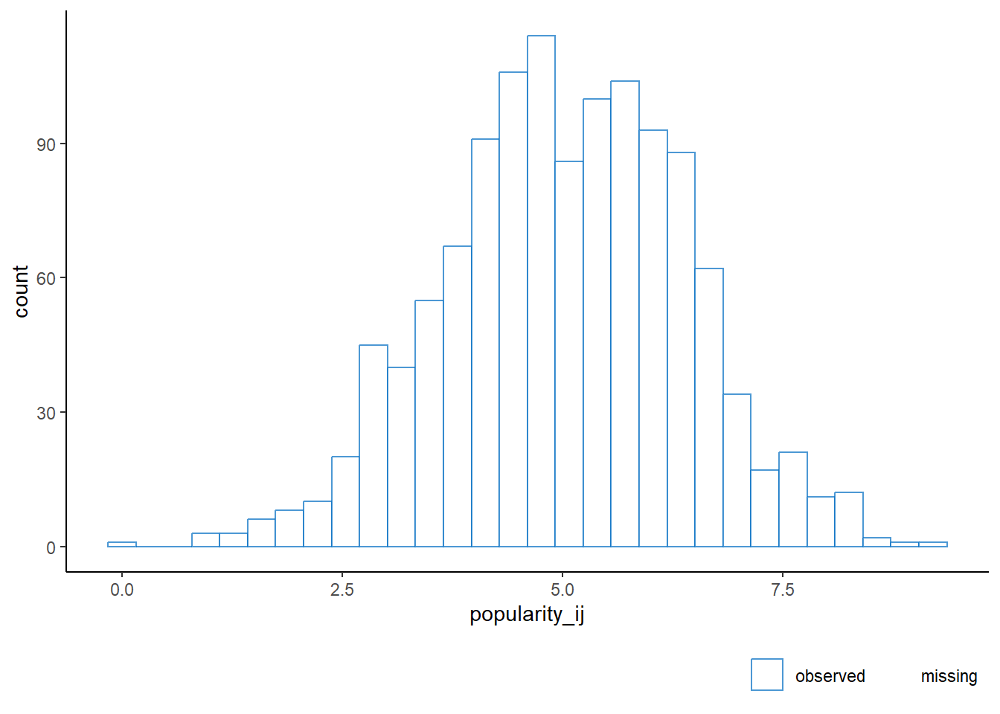
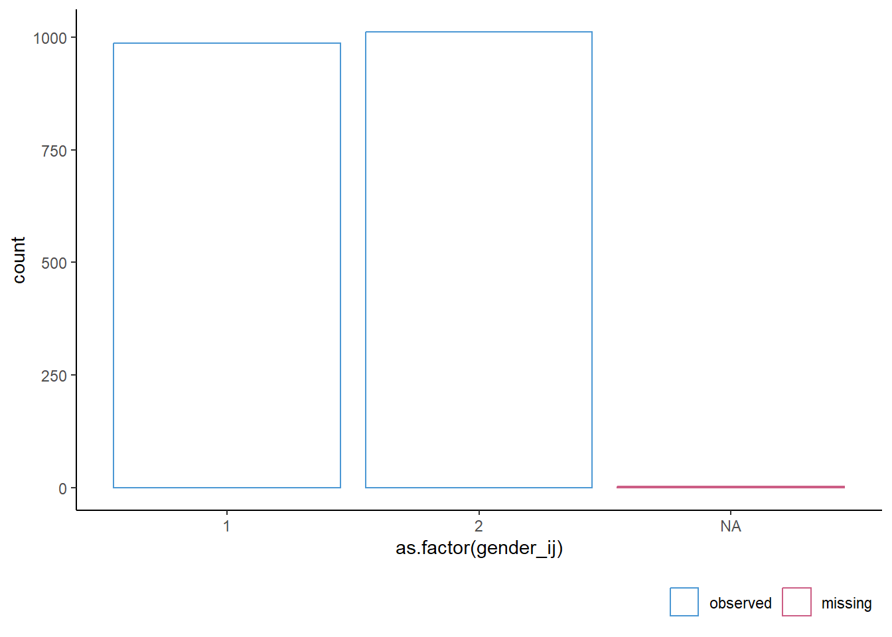

library(mice) # for imputation
library(ggmice) # for visualization
library(ggplot2) # for visualization
library(dplyr) # for data manipulation
library(lme4) # for multilevel modeling
library(broom) # for tidying model output
library(broom.mixed) # for tidying mixed model outputImputation of incomplete multilevel data
Introduction
This is a tutorial on multiple imputation of incomplete multilevel data with mice in R. But before we dive into the details and feel sorry for all the holes in our data, it is important to go a few steps back. Because it is not just holes in our data. Most often, there is more data than holes. And more data means more information. In this tutorial we frame your mind to consider the flow of that information in such a way that the multilevel structure is taken into account. In other words, we will show you how to solve for the incomplete data to fit your multilevel model.
Regardless of the type of model we are estimating, we need information for our model to be fit on. Some information we can see, such as the data we have collected. Other sources of information may be unavailable, such as missing values or cases that are not part of our data set. It can easily occur that the available information is not sufficient for our model to arrive at the correct conclusion. This is a common scenario in practice and extends far beyond the domain of mere missing values in data sets (see e.g. Hand 2020). In any case, when the available information is not sufficient, our standard modeling practices fall short and we need to adjust the model to arrive at the correct conclusion.
The concept of adjusting models is by itself quite intuitive. When we need to go from data to answer on a dataset that does not tell us everything, there are but three solutions: We can either append the data with the necessary unavailable information, adjust our modeling such that the necessary unavailable information is taken into account, or do both. In either way, some model is needed to solve for the incompleteness.
Modeling incomplete data sets, however, is not a trivial task. One needs to carefully make assumptions about the nature of the available and unavailable information and explicitly define the models that connect these two information sources. This tasks becomes increasingly challenging when the complexity of the modeling effort increases. For multilevel data sets this is especially the case, because the complexity of modeling can increase exponentially with every additional level.
In this tutorial we aim to provide a practical guide to imputing incomplete multilevel data. We will use the R package mice to illustrate the imputation process and demonstrate how it connects to a larger ecosystem of imputation and combination methods for incomplete multilevel data.
Intended audience
This tutorial is aimed at researchers and analysts who know their way around multilevel analyses, but lack the skills and expertise of dealing with incomplete sources of information. For them we will gently introduce, explain and demonstrate the necessary methodology and its application in mice. For applied researchers and analysts that are both unfamiliar with multilevel modeling and incomplete data analysis, we will try to be as complete as possible, but we may refer to other sources to complement our tutorial.
Methods
The R package mice provides a framework for imputing incomplete data on a variable-by-variable basis. The mice function allows users to flexibly specify how many times and under what model the missing data should be imputed. This is reflected in the first four function arguments
mice(data, m, method, predictorMatrix, ...)where data refers to the incomplete dataset, m determines the number of imputations, method denotes the functional form of the imputation model per variable and predictorMatrix specifies the interrelational dependencies between the variables and imputation models (i.e., the set of predictors to be used for imputing each incomplete variable).
The object supplied as data should be tabular (e.g. a data.frame with \(n\) rows and \(p\) variables, with missing values coded as NA). For multilevel imputation models, a clustering variable is required. The clustering variable should be a factor or an integer vector, with each level representing a unique cluster. Moreover, the data should be in ‘long’ format, with each row representing a unique unit-level observation. The multilevel imputation functions implemented in mice will not work with ‘wide’ data, where each row represents a cluster and the columns represent the unit-level observations.
The number of imputations m should be determined based on the severity of the missing data problem and the intended analysis model of substantive interest. Van Buuren (2018, \(\S\) 2.8) suggests using the default m = 5 for imputation model building, and to increase m as required after initial exploration.
The method argument specifies the imputation method to be used for each column in data. If not supplied by the user, method defaults to convenient standard methods for single level continuous and categorical data. Since these do not take any clustering or multilevel structures into account, valid imputation of incomplete multilevel data will typically require a user-supplied methods vector. The tables 7.2, 7.3 and 7.4 in van Buuren (2018, \(\S\) 7.6, \(\S\) 7.7 and \(\S\) 7.8, respectively) provide an overview of the available methods to perform univariate multilevel imputation. Note that that in the current version of mice (v. 3.16) there are no dedicated multilevel imputation methods available for discrete variables with 3 or more unordered categories.
With the predictorMatix argument, mice users can define which columns should be used as predictors in each imputation model. The default predictor matrix is a square binary matrix with the variables to be imputed in the rows and the imputation model predictors in the columns. The default predictorMatrix will not be suitable for multilevel data. Univariate imputation methods for two-level data use other codes than 0 and 1. In the predictor matrix, -2 denotes the class variable, a value 1 indicates a fixed effect and a value 2 indicates a random effect. Additionally, the method 2l.pan uses codes 3 and 4 to add class means to codes 1 and 2 respectively.
FIMD, section 7.10
Recipe for a level-1 target:
- Define the most general analytic model to be applied to imputed data;
- Select a 2l method that imputes close to the data;
- Include all level-1 variables;
- Include the disaggregated cluster means of all level-1 variables;
- Include all level-1 interactions implied by the analytic model;
- Include all level-2 predictors;
- Include all level-2 interactions implied by the analytic model;
- Include all cross-level interactions implied by the analytic model;
- Include predictors related to the missingness and the target;
- Exclude any terms involving the target
Recipe for a level-2 target:
- Define the most general analytic model to be applied to imputed data;
- Select a 2lonly method that imputes close to the data;
- Include the cluster means of all level-1 variables;
- Include the cluster means of all level-1 interactions;
- Include all level-2 predictors;
- Include all interactions of level-2 variables;
- Include predictors related to the missingness and the target;
- Exclude any terms involving the target
Case study
Prerequisites: incomplete dataset and known multilevel modeling strategy (i.e. the most general analytic model to be applied to imputed data), plus an assumed missingness mechanism. This tutorial assumes M(C)AR, for MNAR see Munoz et al.
- Load the data, make sure the variables are correctly formatted (e.g. numeric clustering variable)
- Explore the missingness
- Fix any cluster-level missingness determinately (note that
2l.onlymethods do not work if there are inconsistencies, fix those first!) - Re-evaluate the missingness
- Explore bivariate relations and associations with missingness indicators (optionally test the associations?)
- For each incomplete variable:
- Determine the imputation method
- Choose imputation model predictors (see recipe)
- Set methods vector and predictor matrix
- Impute the incomplete data
- If error…
- After successful run:
- Evaluate convergence
- Evaluate imputations
- Analyze and pool
- If error… (e.g. rescale variables by converting imputations to long format, mutate, then back to mids)
- After successful run:
- Evaluate missingness ratio’s (e.g. fraction of missing information)
- If necessary, increase \(m\) and re-impute
- For further multilevel model building, AICs could be pooled, how?
The most general analytic model to be applied to imputed data (Hox et al, 2018).
\[\begin{align} \text{popularity}_{ij} = &\gamma_{00}+ \gamma_{10} \text{gender}_{ij} + \gamma_{20} \text{extraversion}_{ij} + \\ &\gamma_{01} \text{experience}_j + \gamma_{21} \text{extraversion}_{ij} \times \text{experience}_j + \\ &u_{2j} \text{extraversion}_{ij} + u_{0j}+ e_{ij} \end{align}\]
Setup R environment
Load the data
load("data/popular_MAR.RData")
dat <- popular_MARInspect the missingness
plot_pattern(dat)
The unit identifier and cluster identifier are observed for all cases. All other variables are incomplete. The outcome variable ‘popularity’ is missing for 799 cases. The cluster-level variable ‘teacher experience’ is missing only once. The unit-level variables ‘gender’, ‘extraversion’ and ‘teacher assessment’ are missing for 3, 344 and 275 cases, respectively. Teacher assessment is not part of the analysis model, but may serve as auxiliary variable in the imputation models. This is advisable if the observed data in the teacher assessment variable is strongly related to the observed data in the incomplete variables or their missingness indicators.
plot_corr(dat)
plot_flux(dat, label = FALSE)
The auxiliary variable ‘teacher assessment’ may be useful in the imputation for the incomplete outcome variable ‘popularity’. The unit identifier is not relevant, and will be left out of the imputation models.
Complete case analysis
Before we start imputing the incomplete data, we can fit a complete case model to the observed data. This will give us a baseline for comparison with the imputed data.
Single-level model
fit <- lm(
popularity_ij ~ 1,
data = dat
)
tidy(fit)# A tibble: 1 × 5
term estimate std.error statistic p.value
<chr> <dbl> <dbl> <dbl> <dbl>
1 (Intercept) 5.03 0.0396 127. 0M0: intercept-only model
fit <- lmer(
popularity_ij ~ (1 | cluster_id),
data = dat,
REML = FALSE
)
tidy(fit)# A tibble: 3 × 6
effect group term estimate std.error statistic
<chr> <chr> <chr> <dbl> <dbl> <dbl>
1 fixed <NA> (Intercept) 5.02 0.0891 56.4
2 ran_pars cluster_id sd__(Intercept) 0.831 NA NA
3 ran_pars Residual sd__Observation 1.09 NA NA M1: model with explanatory variables
fit <- lmer(
popularity_ij ~ gender_ij + extraversion_ij + experience_j + (1 | cluster_id),
data = dat,
REML = FALSE
)
tidy(fit)# A tibble: 6 × 6
effect group term estimate std.error statistic
<chr> <chr> <chr> <dbl> <dbl> <dbl>
1 fixed <NA> (Intercept) -0.391 0.198 -1.98
2 fixed <NA> gender_ij 1.29 0.0482 26.8
3 fixed <NA> extraversion_ij 0.445 0.0216 20.6
4 fixed <NA> experience_j 0.0835 0.00857 9.75
5 ran_pars cluster_id sd__(Intercept) 0.518 NA NA
6 ran_pars Residual sd__Observation 0.765 NA NA M1A: model with explanatory variables, extraversion slope random
fit <- lmer(
popularity_ij ~ gender_ij + extraversion_ij + experience_j +
(1 + extraversion_ij | cluster_id),
data = dat,
REML = FALSE
)
tidy(fit)# A tibble: 8 × 6
effect group term estimate std.error statistic
<chr> <chr> <chr> <dbl> <dbl> <dbl>
1 fixed <NA> (Intercept) -0.340 0.222 -1.53
2 fixed <NA> gender_ij 1.28 0.0477 26.9
3 fixed <NA> extraversion_ij 0.438 0.0282 15.5
4 fixed <NA> experience_j 0.0804 0.00843 9.54
5 ran_pars cluster_id sd__(Intercept) 1.15 NA NA
6 ran_pars cluster_id cor__(Intercept).extraversio… -0.903 NA NA
7 ran_pars cluster_id sd__extraversion_ij 0.177 NA NA
8 ran_pars Residual sd__Observation 0.742 NA NA M0: model with with cross-level interaction
fit <- lmer(
popularity_ij ~ gender_ij + extraversion_ij + experience_j +
extraversion_ij:experience_j + (1 + extraversion_ij | cluster_id),
data = dat,
REML = FALSE
)Warning in checkConv(attr(opt, "derivs"), opt$par, ctrl = control$checkConv, :
Model failed to converge with max|grad| = 0.00729487 (tol = 0.002, component 1)tidy(fit)# A tibble: 9 × 6
effect group term estimate std.error statistic
<chr> <chr> <chr> <dbl> <dbl> <dbl>
1 fixed <NA> (Intercept) -2.22 0.309 -7.18
2 fixed <NA> gender_ij 1.27 0.0470 27.0
3 fixed <NA> extraversion_ij 0.770 0.0461 16.7
4 fixed <NA> experience_j 0.211 0.0187 11.3
5 fixed <NA> extraversion_ij:experience_j -0.0233 0.00295 -7.91
6 ran_pars cluster_id sd__(Intercept) 0.593 NA NA
7 ran_pars cluster_id cor__(Intercept).extraversio… -0.746 NA NA
8 ran_pars cluster_id sd__extraversion_ij 0.0217 NA NA
9 ran_pars Residual sd__Observation 0.744 NA NA The last model does not converge. This is likely due to the missingness in the data. We will now impute the incomplete data and re-fit the models.
Imputation
Sandbox
Fix cluster-level missingness determinately.
meth <- make.method(dat)
meth["experience_j"] <- "2lonly.mean"
meth[meth != "2lonly.mean"] <- ""
pred <- make.predictorMatrix(dat)
pred[] <- 0
pred[, "cluster_id"] <- -2
imp <- mice(
popular_MAR,
m = 1,
method = meth,
predictorMatrix = pred,
maxit = 1)
iter imp variable
1 1 experience_jplot_pattern(complete(imp))
This procedure has fixed the missing experience value
Does not work if there are inconsistencies within clusters! But we can do this manually.
dat |>
group_by(cluster_id) |>
reframe(teacher_experience = unique(experience_j))# A tibble: 102 × 2
cluster_id teacher_experience
<dbl> <dbl>
1 1 4
2 1 NA
3 1 24
4 2 14
5 3 13
6 4 20
7 5 5
8 6 8
9 7 17
10 8 12
# ℹ 92 more rowsThis shows us that in the first cluster teacher experience of 4 and 24 is recorded.
dat |>
filter(cluster_id == 1) |>
ggplot(aes(experience_j)) + geom_histogram()`stat_bin()` using `bins = 30`. Pick better value with `binwidth`.Warning: Removed 1 row containing non-finite outside the scale range
(`stat_bin()`).
For most pupils, teacher experience is 24. We can quite safely assume that the teacher experience of 4 is a data entry error. We can fix this by over-imputing the teacher experience of 4 to 24, and deductively imputing the missing teacher experience from the same cluster as 24. The following line of code sets the teacher experience of 4 manually as missing.
dat[dat$cluster_id == 1 & (is.na(dat$experience_j) | dat$experience_j == 4), "experience_j"] <- NAimp <- mice(
popular_MAR,
m = 1,
method = meth,
predictorMatrix = pred,
maxit = 1)
iter imp variable
1 1 experience_jplot_pattern(complete(imp))